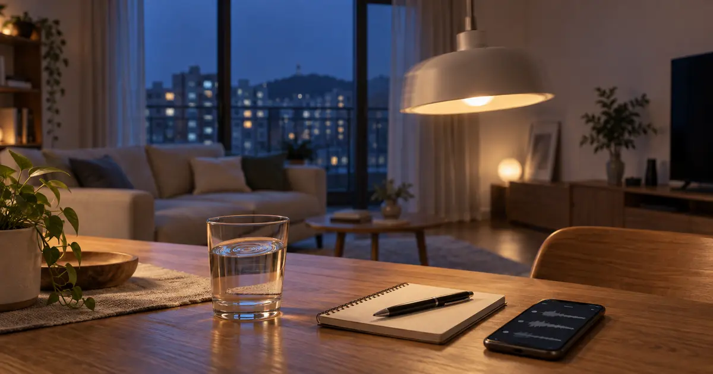
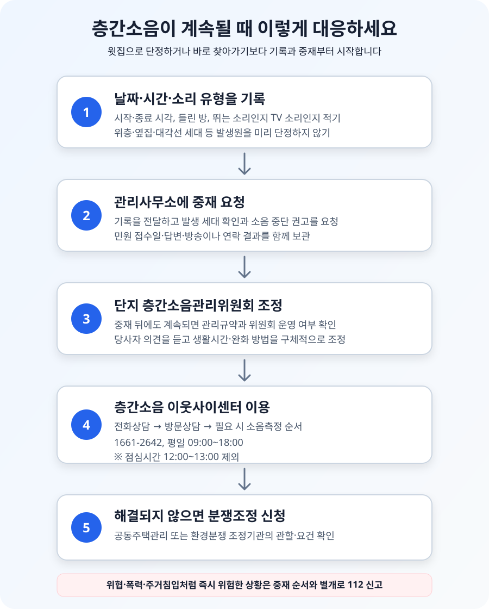

층간소음이 계속될 때 윗집에 바로 찾아가도 될까?

층간소음이 반복돼도 윗집으로 단정해 바로 찾아가기보다 날짜·시간·소리 유형을 기록한 뒤 관리사무소에 중재를 요청하는 것이 좋습니다. 공동주택관리법은 관리주체가 피해 세대의 요청을 받으면 발생 세대에 소음 중단이나 차음 조치를 권고할 수 있도록 합니다. 그래도 계속되면 단지 층간소음관리위원회, 층간소음 이웃사이센터의 상담·현장진단, 분쟁조정 절차를 차례로 이용할 수 있습니다.
윗집으로 바로 찾아가기보다 발생원부터 확인하세요
늦은 밤 쿵쿵거리는 소리가 계속되면 위층에 올라가 따지고 싶은 마음이 먼저 듭니다. 그러나 공동주택의 소리는 벽과 바닥을 타고 옆집이나 대각선 세대에서 전달되기도 합니다. 환경부·국토교통부의 생활안내도 층간소음이 바로 위층만이 아니라 옆집과 대각선 세대에서 전해질 수 있으므로 관리사무소나 층간소음관리위원회를 통한 중재를 권합니다.
한 번 찾아가 정중히 사정을 설명하는 행위 자체를 모두 위법이라고 단정할 수는 없습니다. 다만 발생 세대를 잘못 짚었거나 감정이 격해지면 소음 문제보다 더 큰 다툼으로 번질 수 있습니다. 상대가 원하지 않는데 초인종을 반복해서 누르거나 문이 열린 틈으로 들어가고, 욕설·협박을 하거나 신상정보를 단지 게시판에 공개하면 주거침입·협박·명예훼손 같은 별도 문제가 생길 수 있습니다. 보복 소음을 내는 것도 해결책이 아닙니다.
특히 어린 자녀가 있거나 교대근무를 하는 세대처럼 생활시간이 다를 수 있습니다. “밤마다 일부러 뛴다”처럼 의도를 추측하기보다 “9월 9일 밤 11시 20분부터 약 25분 동안 안방 천장에서 뛰는 듯한 충격음이 반복됐다”고 전달해야 상대도 무엇을 바꿔야 하는지 알 수 있습니다.
날짜와 시간만 적지 말고 소리의 특징도 남기세요
층간소음 일지는 상대를 압박하기 위한 문서가 아니라 반복되는 양상을 설명하기 위한 자료입니다. 소리가 시작되고 끝난 시각, 들린 방, 소리 종류, 반복 횟수, 잠이나 재택근무에 미친 영향을 같은 형식으로 적으세요. 처음부터 며칠간 기록하면 관리사무소가 방송이나 중재 시간을 정하기도 쉽습니다.
아래는 기록 방법을 보여 주기 위한 가상 사례입니다. 실제 측정값이나 특정 단지의 사례가 아닙니다.
| 발생 일시 | 들린 곳·소리 | 지속·반복 | 생활 영향과 조치 |
|---|---|---|---|
| 9월 7일 23:18~23:42 | 안방 천장 쪽, 뛰거나 무거운 물건을 놓는 듯한 충격음 | 약 2~3분 간격으로 반복 | 수면 중 깸, 관리사무소 야간 연락처 확인 |
| 9월 8일 06:35~06:50 | 거실과 안방, 빠르게 걷는 듯한 소리 | 15분간 간헐적 | 시각과 위치 기록 |
| 9월 9일 22:46~23:10 | 거실, 낮은 음악과 충격음이 함께 들림 | 약 24분 | 관리사무소에 기록 전달, 중재 요청 |
휴대전화 녹음은 당시 상황을 기억하고 반복 양상을 보여 주는 보조자료가 될 수 있습니다. 하지만 휴대전화 소음측정 앱의 숫자를 공인 측정결과처럼 제시해서는 안 됩니다. 기종과 마이크, 측정 위치, 배경소음에 따라 값이 달라지고 공식 기준은 정해진 측정방법으로 판단합니다. 원본 파일은 편집하지 말고 촬영·녹음 일시가 남은 상태로 보관하세요.
집 안에 설치한 기계나 배관이 원인일 가능성도 확인합니다. 보일러·환풍기·세탁기 작동을 멈췄을 때도 같은 소리가 나는지, 특정 방에서만 크게 들리는지 살펴보세요. 발생원이 확인되지 않으면 층간소음 이웃사이센터도 중재 대상을 정하기 어렵습니다.
불편한 소리가 모두 같은 기준으로 처리되는 것은 아닙니다
공동주택 층간소음의 범위와 기준에 관한 규칙은 공동주택 입주자 또는 사용자의 활동에서 생기는 소음을 직접충격 소음과 공기전달 소음으로 구분합니다. 뛰거나 걷는 동작 때문에 바닥·벽에 충격이 생기는 소리는 직접충격 소음, TV·음향기기 소리는 공기전달 소음에 해당합니다.
| 소리 | 규칙상 층간소음 해당 여부 | 먼저 문의할 곳 |
|---|---|---|
| 뛰기·걷기·물건을 떨어뜨리는 충격음 | 직접충격 소음 | 관리사무소, 층간소음관리위원회, 이웃사이센터 |
| TV·오디오 등 음향기기 소리 | 공기전달 소음 | 관리사무소, 층간소음관리위원회, 이웃사이센터 |
| 욕실·화장실·다용도실의 급수·배수 소리 | 규칙상 층간소음에서 제외 | 관리사무소에 배관·설비 점검 요청 |
| 사람의 목소리·악기 소리 | 이 규칙의 측정 대상과 다를 수 있음 | 관리규약 확인, 관리사무소 중재 |
| 인테리어 공사·반려동물 소리 | 이웃사이센터 업무범위와 다를 수 있음 | 공사시간·관리규약, 관리사무소와 지자체 안내 확인 |
제외되는 소리라고 해서 마음대로 내도 된다는 뜻은 아닙니다. 다만 같은 측정기준과 처리기관을 그대로 적용하기 어렵다는 의미입니다. 배관 소음이면 설비 결함을 점검하고, 공사 소음이면 단지 관리규약의 공사시간과 관할 지자체의 생활소음 안내를 확인하는 식으로 원인에 맞는 경로를 선택해야 합니다.
낮과 밤, 소리 유형에 따라 기준이 다릅니다
현행 규칙은 주간을 오전 6시부터 오후 10시까지, 야간을 오후 10시부터 다음 날 오전 6시까지로 구분합니다. 직접충격 소음은 1분간 등가소음도와 최고소음도를, 공기전달 소음은 5분간 등가소음도를 사용합니다.
| 구분 | 평가 단위 | 주간 06:00~22:00 | 야간 22:00~06:00 |
|---|---|---|---|
| 직접충격 소음 | 1분간 등가소음도 | 39dB | 34dB |
| 직접충격 소음 | 최고소음도 | 57dB | 52dB |
| 공기전달 소음 | 5분간 등가소음도 | 45dB | 40dB |
최고소음도는 측정시간 동안 세 번 이상 기준을 넘으면 기준을 초과한 것으로 봅니다. 또 2005년 6월 30일 이전 사업승인을 받은 공동주택의 직접충격 소음 기준에는 규칙이 정한 보정이 적용될 수 있습니다. 아파트 준공연도만 보고 임의로 더하거나 빼지 말고 전문 측정기관의 안내를 따르세요.
이 수치는 “한 번 시끄러우면 곧바로 처벌된다”는 기준이 아닙니다. 반대로 측정값이 기준 아래라는 이유만으로 불편이 없었다고 단정할 수도 없습니다. 생활습관 조정과 관계 회복을 위한 중재, 손해배상이나 분쟁조정에서 사용하는 객관적 자료는 서로 역할이 다릅니다.

관리사무소에는 구체적인 시간대와 요청 내용을 전달하세요
공동주택관리법 제20조에 따르면 입주자 등은 층간소음으로 피해를 입으면 관리주체에 그 사실을 알리고 소음 발생 세대에 층간소음 발생을 중단하거나 차음 조치를 권고해 달라고 요청할 수 있습니다. 관리주체는 사실관계를 확인하기 위해 세대 안을 확인하는 등 필요한 조사를 할 수 있고, 발생 세대는 관리주체의 조치와 권고에 협조해야 합니다.
관리사무소에 연락할 때는 “윗집이 너무 시끄럽다”로 끝내지 말고 동·호수, 반복된 날짜와 시간, 소리 유형, 가장 크게 들린 방, 원하는 조치를 함께 전달하세요. 예를 들면 “최근 사흘간 밤 10시 40분 이후 거실과 안방에서 뛰는 듯한 충격음이 20분 이상 반복됐습니다. 발생 세대를 확인해 해당 시간대에는 뛰는 활동을 줄이도록 중재해 주세요”라고 요청할 수 있습니다.
접수일과 담당자, 방송·전화·방문 중 어떤 조치를 했는지, 상대 세대의 답변이 있었는지를 기록합니다. 경비실 방송만 반복되고 달라지지 않는다면 관리사무소에 개별 중재와 단지 층간소음관리위원회 운영 여부를 물어보세요. 일정 규모 이상의 공동주택에는 층간소음관리위원회 구성이 의무화되어 있고, 구체적인 구성과 운영은 단지 관리규약에서 확인할 수 있습니다.
임차인도 실제 거주자로서 피해 사실을 관리주체에 알릴 수 있습니다. 집주인의 허락을 먼저 받아야만 민원을 넣을 수 있는 것은 아닙니다. 다만 건물 구조나 바닥 마감 하자가 의심되거나 장기 수선이 필요하다면 임대인에게도 상황과 관리사무소 답변을 함께 전달하는 편이 좋습니다.
이웃사이센터는 상담 뒤 바로 측정부터 하는 곳이 아닙니다
관리사무소 중재로 해결되지 않으면 한국환경공단의 층간소음 이웃사이센터를 이용할 수 있습니다. 공식 업무절차는 전화상담, 방문상담, 소음측정 순서입니다. 먼저 1661-2642로 상담하거나 온라인으로 방문상담을 신청합니다. 전화상담 시간은 평일 오전 9시부터 오후 6시까지이며 정오부터 오후 1시까지는 제외됩니다.
방문상담에서는 피해를 호소하는 세대와 소음 발생이 의심되는 세대의 이야기를 듣고 갈등을 조정합니다. 방문상담 뒤에도 갈등이 계속되고 수음 세대가 측정을 신청하면 소음측정이 진행됩니다. 온라인 측정 예약은 사전 중재상담과 신청번호가 있어야 하므로, 아무 상담 없이 측정 날짜부터 고르는 방식은 아닙니다.
센터의 업무범위는 공동주택의 직접충격 소음과 공기전달 소음을 중심으로 합니다. 발생 세대를 알 수 없거나 공사·보일러·배관처럼 다른 원인이 의심되면 서비스 대상과 진행방법이 달라질 수 있습니다. 아파트가 아닌 연립·다세대주택이나 주거용 오피스텔도 지역과 시행 범위에 따라 지원 여부가 다를 수 있으니 신청 전에 센터의 최신 안내를 확인하세요.
측정을 앞두고 일부러 평소보다 조용히 해 달라고 부탁하거나 반대로 보복 소음을 내서는 안 됩니다. 기존 일지와 녹음, 관리사무소 중재 기록을 사실대로 제출하고, 측정 위치와 시간을 담당자와 상의하세요. 측정이 생활 불편 전체를 대신 설명하는 것은 아니므로 당사자가 지킬 시간대와 생활습관도 함께 조정해야 합니다.
중재와 현장진단 뒤에도 계속되면 분쟁조정을 검토하세요
단지 안의 조정과 이웃사이센터 지원 뒤에도 해결되지 않으면 공동주택관리 분쟁조정 또는 환경분쟁 조정을 검토할 수 있습니다. 중앙·지방 공동주택관리 분쟁조정위원회는 층간소음에 관한 분쟁을 조정 대상에 포함합니다. 단지 세대수와 당사자 합의 여부에 따라 중앙위원회와 지방위원회의 관할이 달라질 수 있으므로 중앙 공동주택관리 분쟁조정위원회 자가진단이나 관할 지자체 안내를 먼저 확인하세요.
신청할 때는 단순히 “몇 달째 시끄럽다”고 적는 것보다 발생 일지, 관리사무소 접수와 중재 결과, 이웃사이센터 상담·측정 자료, 당사자에게 요청한 내용과 답변을 날짜순으로 정리하는 것이 좋습니다. 진단서나 숙박비처럼 손해를 주장할 자료가 있다면 층간소음과 어떤 관련이 있는지도 설명해야 합니다.
소송을 생각한다면 측정기준 초과만으로 결과가 자동 결정되는 것은 아닙니다. 소음의 정도와 기간, 발생 시간, 당사자가 줄이기 위해 한 조치, 피해와의 인과관계 등 개별 사정이 함께 검토될 수 있습니다. 금액이 크거나 폭행·협박·주거침입 등 다른 문제가 얽혔다면 수집 방법부터 변호사 등 자격 있는 전문가와 상의하세요.
오늘 바로 할 일만 확인해 보세요
- □ 소리가 들리는 세대를 바로 위층으로 단정하지 않았다.
- □ 날짜, 시작·종료 시각, 들린 방, 소리 종류와 반복 횟수를 적었다.
- □ 휴대전화 앱의 데시벨 숫자를 공인 측정결과처럼 사용하지 않았다.
- □ 집 안의 보일러·환풍기·세탁기·배관이 원인인지도 살펴봤다.
- □ 관리사무소에 기록을 전달하고 발생 세대 확인과 중재를 요청했다.
- □ 민원 접수일, 담당자, 방송·연락·방문 결과를 보관했다.
- □ 계속되면 단지 층간소음관리위원회 운영 여부를 확인했다.
- □ 이웃사이센터는 상담→방문상담→필요 시 측정 순서임을 확인했다.
- □ 상대 세대에 반복 방문하거나 욕설·협박·보복 소음을 내지 않았다.
- □ 즉시 위험한 상황은 일반 중재와 별개로 112에 신고한다.
공식 자료 및 참고자료
- 국가법령정보센터 — 공동주택관리법 제20조(층간소음의 방지 등)
- 국가법령정보센터 — 공동주택 층간소음의 범위와 기준에 관한 규칙
- 찾기쉬운 생활법령정보 — 층간소음의 범위와 해결방법
- 대한민국 정책브리핑 — 이웃 간 층간소음 갈등 해결방법
- 한국환경공단 층간소음 이웃사이센터 — 상담·현장진단 업무절차
- 층간소음 이웃사이센터 — 방문상담 신청
- 국토교통부 중앙 공동주택관리 분쟁조정위원회 — 자가진단·조정 신청
정보 기준일: 2026-09-10. 이 글은 공동주택에서 반복되는 생활소음에 대응하는 일반적인 방법을 설명한 정보이며 개별 법률 자문이 아닙니다. 건물 종류, 소음 원인, 단지 관리규약, 지역과 당사자 상황에 따라 적용 기관과 절차가 달라질 수 있습니다. 상담번호·운영시간·측정기준은 신청 전 각 기관의 최신 안내를 다시 확인하세요.
입주 뒤 생활 점검에 같이 쓸 자료
- 이사 당일 체크리스트계량기·시설 상태와 인수인계 기록
- 톺다 게시판개인정보를 제외하고 비슷한 주거생활 경험 나누기